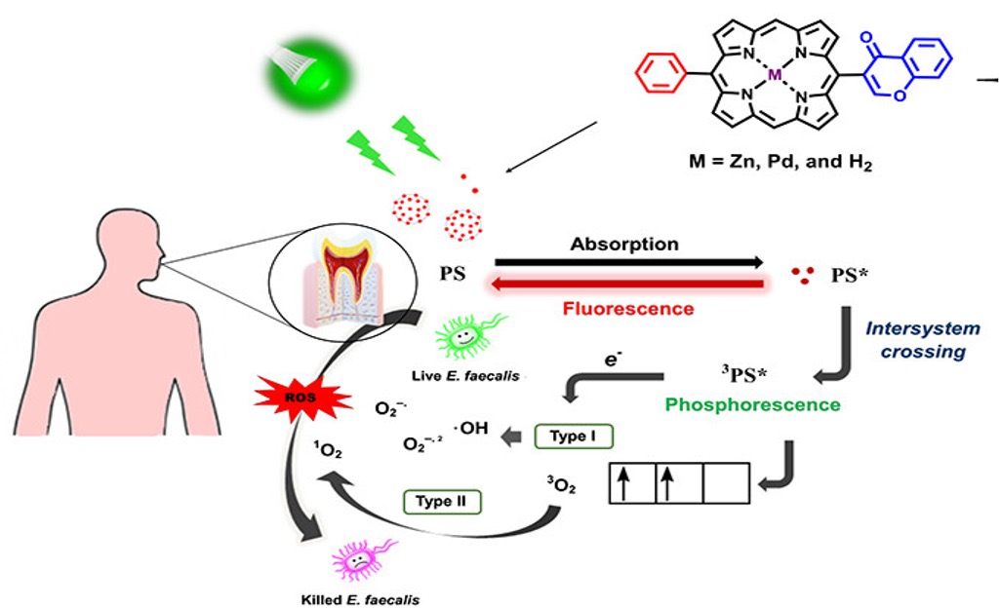
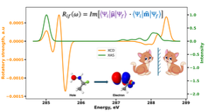

George Baffour Pipim
I'm a
"What we observe is not nature itself, but nature exposed to our method of questioning." — Werner Heisenberg
About
I am a computational chemist working at the intersection of quantum chemistry, excited-state dynamics, and spectroscopic simulations. My research applies DFT/TD-DFT, CC/EOM-CC, AIMD, and relativistic methods to problems in catalysis, photophysics, drug designand electrospray propulsion. I develop and validate theoretical models that reproduce experimental observables—including XAS/XCD and UV–Vis spectra—and use these insights to guide molecular design for CO2 photoreduction, OLED emitters, and biomolecles. I have authored 19 peer-reviewed publications and received multiple fellowships and awards. My work is highly collaborative, often bridging theory and experiment, and I am proficient in Q-CHEM, CFOUR, ORCA, Gaussian, and Python-based scientific workflows. I also hold certification in molecular modeling for drug discovery, with experience in Free Energy Perturbation methods. Outside the lab, I'm interested in philosophy, spending time in nature, and cars. These interests shape how I think about structure, perspective, and design—both in science and beyond.
Theoretical & Computational Chemist.
PhD Candidate in Chemistry at the University of Southern California.
- Affiliation : University of Southern California (USC)
- Affiliation : Nesvard Institute of Molecular Sciences
- Affiliation : International Younger Chemists Network (IYCN)
- Affiliation : American Chemical Society (ACS)
- Affiliation : Ghana Chemical Society (GCS)
- Affiliation : National Organization for the Professional Development of Black Chemists and Chemical Engineers (NOBCChE)
- City: Los Angeles, USA
- Expected Degree: PhD in Chemistry (August 2026)
- Work: Available
Publications peer-reviewed publications
Research Projects Current research projects
Citations Papers citation count
Skills
Selected Technical Expertise
Methods
Core
Working
Programming & ML
Core
Working
Scientific Software
Core
Working
Resume
Sumary
George Baffour Pipim
PhD researcher with expertise in quantum chemistry for modeling dynamics and spectroscopic signatures of functional molecular systems.
- University Park, Los Angeles, California
- baffourp@usc.edu
Education
Doctor of Philosophy in Chemistry
2021 - 2026
University of Southern California, Los Angeles, California
Advisor: Prof. Anna I. Krylov
Master of Arts in Chemistry
2021 - 2024
University of Southern California, Los Angeles, California
Advisor: Prof. Anna I. Krylov
Bachelor of Science in Chemistry (First Class Honor)
2016 - 2020
Kwame Nkrumah University of Science and Technology, Kumasi, Ghana
Advisor: Prof. Richard Tia & Prof. Evans Adei
Thesis title: Quantum Mechanical Studies on the Mechanisms of Selected 1,3-Dipolar Cycloaddition Reactions for the Formation of Synthetically- and Pharmaceutically Relevant Precursors
Research
Selected research projects.
- All
- Catalysis
- Propellants
- Materials
- Drug Scaffolds
- Methods



Publications
*Corresponding author · ‡Student mentee
Interests
Energy Technologies
I am interested in molecular and materials-level processes that support next-generation energy technologies, with emphasis on efficiency, scalability, and real-world deployment
Drug Design and Discovery
I am interested in structure-based drug design and molecular modeling approaches that support lead identification, optimization, and pharmaceutical R & D pipelines
Space System and Propulsion
My interests include the science and engineering behind spacecraft propulsion and charged-particle systems, particularly technologies relevant to electrospray thrusters
Light-Enabled Technologies
I am interested in photochemical and light-driven processes that underpin technologies such as sensing, energy conversion, and advanced functional materials
Method Development
I am interested in developing and applying quantum chemical methods to improve accuracy, efficiency, and applicability of simulations for complex, real-world molecular systems
Reaction Mechanism and Catalysis
I am interested in understanding reaction mechanisms at the molecular level to enable rational catalyst design, improve reaction efficiency, and guide optimization in energy, chemical, and pharmaceutical applications
News
Contact
Have an idea, opportunity, or shared interest you'd like to talk about? Send me a message — I'm always happy to connect and exchange ideas.
Address
University Park, Los Angeles, California 90007
Email Us
baffourp@usc.edu